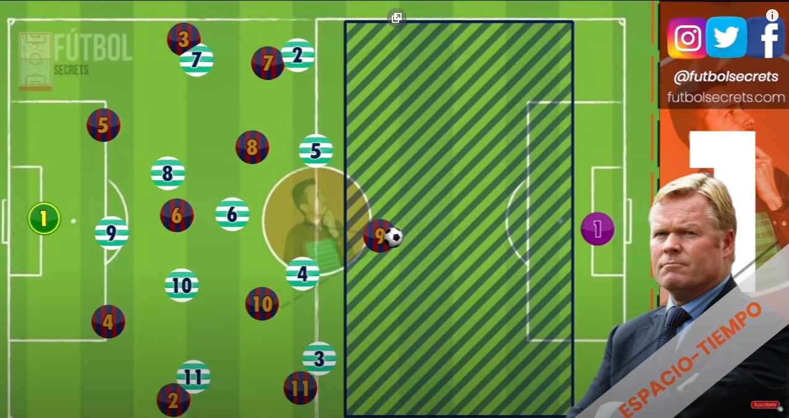

FC BARCELONA
FC BARCELONA
BARKITA TÁCTICO
Tiki-taka se basa en la unidad del equipo y una comprensión integral de la geometría del espacio en un campo de fútbol.
El ejemplo de Pep Guardiola de tiki-taka en el FC Barcelona se considera la mejor aplicación de este estilo después de que Barcelona ganó el séxtuple en 2009, Barcelona jugó con una línea defensiva alta que usualmente aplicaba la trampa del fuera de juego con mediocampistas brindando apoyo a los defensas para hacer más opciones de pase disponibles. . Los defensores son pacientes, prefieren opciones de pase seguro en busca de mediocampistas con el balón circulando en cualquier lugar del campo esperando un hueco para hacer un pase vertical. El equipo creó la mayoría de oportunidades dependiendo de los pases a través y la realización de pases de ida y vuelta, generalmente con Lionel Messi involucrado en la acción. Guardiola prefirió la libertad en el último tercio del campo, lo cual fue efectivo ya que el equipo creó muchas oportunidades por partido.

Tiki-taka se ha descrito de diversas formas como "un estilo de juego basado en llegar al fondo de la red mediante pases cortos y movimientos", [20] un "estilo de pases cortos en el que la pelota se trabaja con cuidado a través de varios canales, " [28] y una" frase sin sentido que ha llegado a significar paso rápido, paciencia y posesión por encima de todo ". [29] El estilo implica movimiento de vagabundeo e intercambio posicional entre los mediocampistas , moviendo el balón en patrones intrincados, [30] y pases bruscos, de uno o dos toques. Tiki-taka es "tanto defensivo como ofensivo en igual medida": el equipo siempre tiene la posesión, por lo que no es necesario cambiar entre defender y atacar. [25]Los comentaristas han contrastado el tiki-taka con la " física de la ruta uno " [20] y con el paso más rápido del Arsenal 2007-08 de Arsène Wenger , que empleó a Cesc Fàbregas como el único canal entre la defensa y el ataque. [28] Tiki-taka se asocia con estilo, creatividad y tacto, [31] pero también puede llevarse a un "extremo lento y sin dirección" que sacrifica la eficacia por la estética.